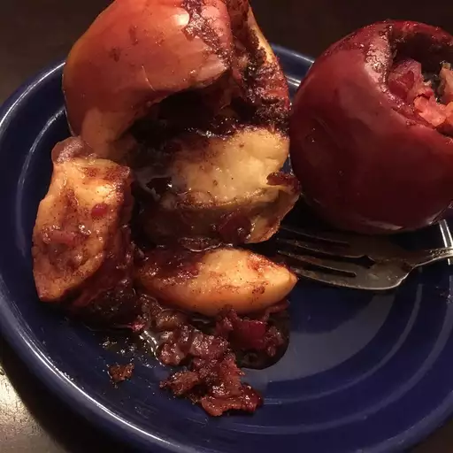

Bacon Apples

Description
I cooked apples that I stuffed with brown sugar and cinnamon over a campfire as a dessert for my family when we went camping.
In the morning we had bacon with our breakfasts and the kids marinated the bacon in the leftover apples!
The bacon was good but we ate the apples after and they where surprisingly good!
Ingredients
- 2 apples, cored
- ¼ cup brown sugar
- 1 teaspoon ground cinnamon, or more to taste
- 4 slices cooked bacon, crumbled
Steps
-
Build a campfire and allow the fire to burn until it has accumulated a bed of coals.
Rake the coals into a flat bed on one side of the fire. Alternatively, preheat an outdoor grill.
- Place apples in a loaf pan. Combine brown sugar and cinnamon in a bowl; spoon into each apple.
-
Place the loaf pan into the campfire or on the grill; cook for about 3 minutes.
Carefully remove the pan from the fire and sprinkle bacon over apples. Place in the fire or on the grill for about 5 minutes more.
Home